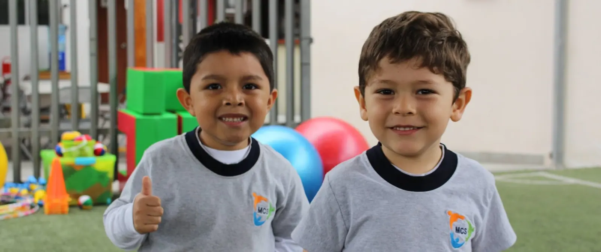
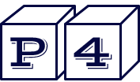
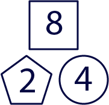
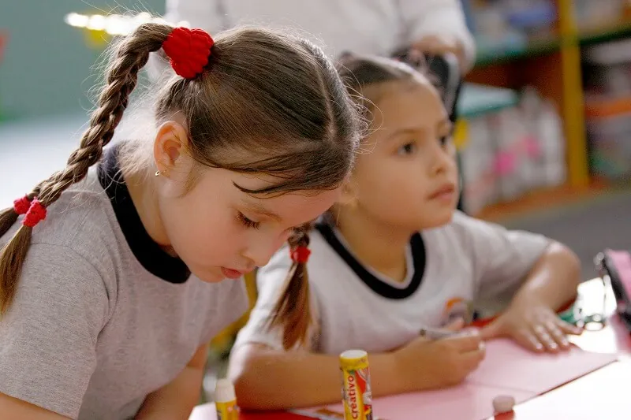
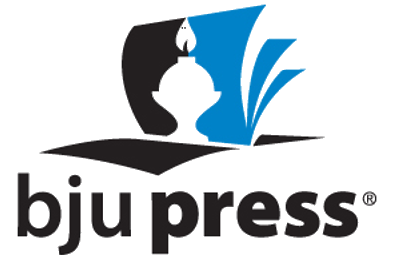
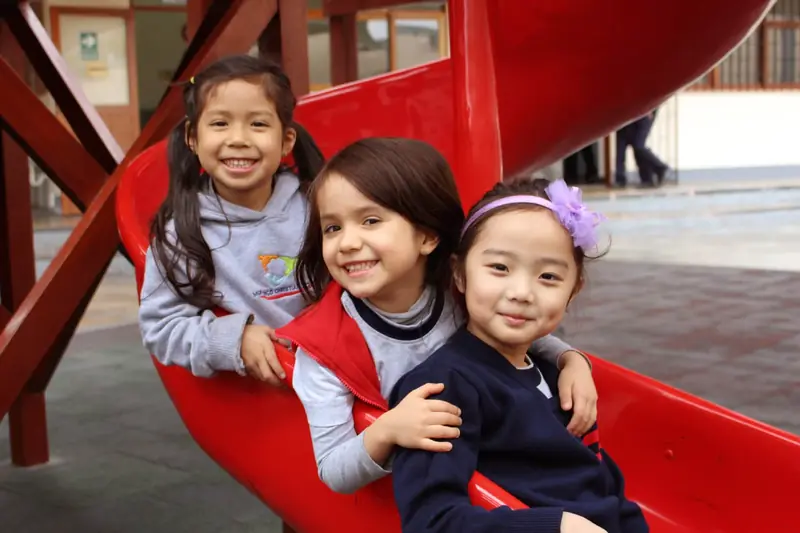
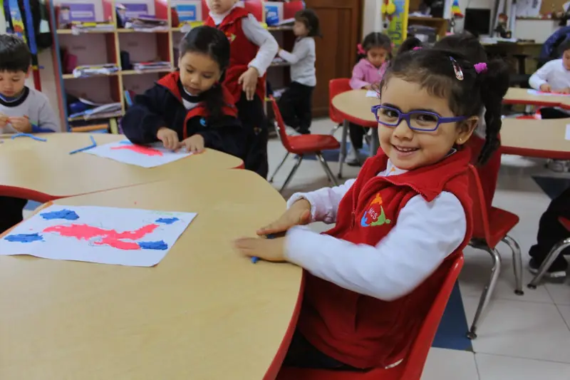

Early Years


¡Aprendemos jugando!
Esta etapa es una muy especial en la vida tanto del niño como la de sus padres. Es una etapa donde el niño encontrará espacios para socializar, para que aprenda a compartir con sus compañeros, comprenda sus emociones, haga nuevos amigos y aprenda a través del juego.
La enseñanza en esta etapa es lúdica, es decir, coloca al juego como la principal estrategia y como atractivo fundamental para que los niños adquieran conocimientos. Se propicia la libre expresión de los niños a través de dramatizaciones, cantos, poesía y especialmente de actividades lúdicas.
Desde el juego se intenta formar al niño en todos los campos del conocimiento como su lengua materna (comunicación), ciencias, matemáticas, artes, responsabilidad ambiental – ciudadana y psicomotricidad.
Pero además de lo estrictamente curricular, abordamos otras áreas, como son el área afectiva y de contención social, ambas muy importantes en esta etapa de crecimiento. El niño aprende a relacionarse con sus compañeros y adultos, a respetar, a ser tolerante, a esperar su turno, a comunicarse usando su lenguaje oral, lo que contribuye enormemente a su desarrollo y futuro exitoso.
Es de suma importancia el trabajo en conjunto y sintonía que realizamos con los padres de familia para lograr juntos los objetivos planteados.
English Immersion Program


We love English!
Iniciamos el Programa de Inmersión en el idioma Inglés (English Immersion Program – EIP), en el cual el niño aprende este idioma de una forma natural, en un ambiente preparado para el aprendizaje de sonidos, fonemas, vocabulario, expresiones cotidianas, etc.
Zoo Phonics es un método cinestésico con el cual trabajamos, este presenta las letras del alfabeto en forma de un animal y un signo asociado a movimientos corporales. Cada animal tiene un nombre el cual ayuda a los niños a practicar los sonidos en inglés. Por ser un método tan divertido, proporciona una manera de grabar en la mente de los niños la pronunciación de los sonidos. Mediante canciones, movimientos, lectura de historias buscamos que los niños sean motivados a que aprendan este idioma. Este aprendizaje facilita el desarrollo de habilidades para la lecto-escritura, incluyendo la ortografía.
En esta etapa profundizamos el desarrollo y coordinación de movimientos motores gruesos y finos, estos últimos permitirán la iniciación de la escritura cursiva.
Dentro de las áreas lógico matemático y de ciencias, buscamos que los niños desarrollen habilidades a partir del conocimiento de su realidad, el niño aprende nociones básicas espaciales, temporales, de medida, etc. a partir de sus vivencias cotidianas.

Phonics | Reading
El plan de estudios es apropiado para la edad, gradual, secuencial y divertido. Es completamente cinestésico y multisensorial, los niños usan: los ojos, los oídos, la boca y el cuerpo para aprender. Las letras de los animales se integran a las diferentes actividades que se realizan diariamente en forma de canciones, juegos, etc., de esta manera comienzan a combinar sonidos, pronto forman morfemas, luego leen y escriben palabras.

Christian Studies
En MCS consideramos muy importante la enseñanza de la palabra desde temprana edad, ya que esta sirve para la enseñanza, la disciplina, la corrección e instrucción en justicia. Los niños aprenden a orar, aprenden pasajes bíblicos y cómo aplicarlos a su vida cotidiana, sus devocionales semanales y sus maestras los guían diariamente a conocer más sobre Jesucristo y la verdad del Evangelio en un ambiente cristiano.

Math
El conocimiento matemático es una herramienta básica para la comprensión y manejo de la realidad en la que el niño se desenvuelve, su enseñanza a temprana edad le permitirá desarrollar su manera de razonar y deducir. Aplicamos la matemática a la vida cotidiana, de esta forma el aprendizaje es dinámico, interesante, comprensible y lo más importante, útil. Los niños son los protagonistas de las diversas situaciones que se proponen en clase.
Critical Thinking
Enseñamos al niño a razonar y pensar con lógica, analizar y juzgar las situaciones adecuadamente y actuar con una base fundamentada. Estas habilidades lo prepararán para enfrentarse a muchos momentos de la vida en las que tendrá que tomar decisiones o afrontar experiencias, información o actitudes propias y de los que le rodean. Buscamos formar personas capaces de enfrentar los retos del futuro con responsabilidad.
Motor Skills
La construcción de un esquema corporal es fundamental en el desarrollo del niño ya que dicha organización es el punto de partida de sus diversas posibilidades de acción. El niño percibe su mundo exterior a través de su cuerpo, a la vez que con su cuerpo entra en relación con él. La actividad corporal y sensorial contribuyen de manera fundamental al desarrollo de la inteligencia. La psicomotricidad fina desarrollará habilidades para iniciar la escritura.


¡Primaria allá vamos!
Seguimos con el Programa de Inmersión en el idioma Inglés (EIP) durante kindergarten hasta sexto grado de primaria. Nos enfocamos en el afianzamiento de los conocimientos en las diferentes áreas hasta el momento enseñadas: phonics, math, science, bible, motor skills (grueso y fino); el completo entendimiento de los conceptos en estas áreas permitirá el óptimo desenvolvimiento del niño en el nivel primaria.
En esta etapa los niños empiezan a leer. Nuestra metodología hace que aprender a leer sea interesante y atractivo, las maestras guían al niño hacia la lectura comprensiva motivándolo y recompensándolo por sus logros. Todo esto se desarrolla en un ambiente alegre, a los niños les encanta participar en los juegos, las canciones, recibir recompensas, lo cual, además de sentirse orgullosos de sus logros, realmente los motivan a seguir explorando y aprendiendo.
En kindergarten introducimos el Método Singapur (Singapore Math – SM) en el área lógico-matemático, este método promueve el desarrollo de procesos, habilidades y actitudes que desarrollan el pensamiento matemático, tiene como principal objetivo la resolución de problemas matemáticos haciendo uso de cinco componentes que conforman el marco curricular de este método, los cuales son: conceptos, habilidades, procesos, metacognición y actitudes. Desde 1995 los alumnos de Singapur han ocupado los primeros puestos de forma consistente en las pruebas externas realizadas por prestigiosos estudios internacionales, como TIMSS y PISA.




